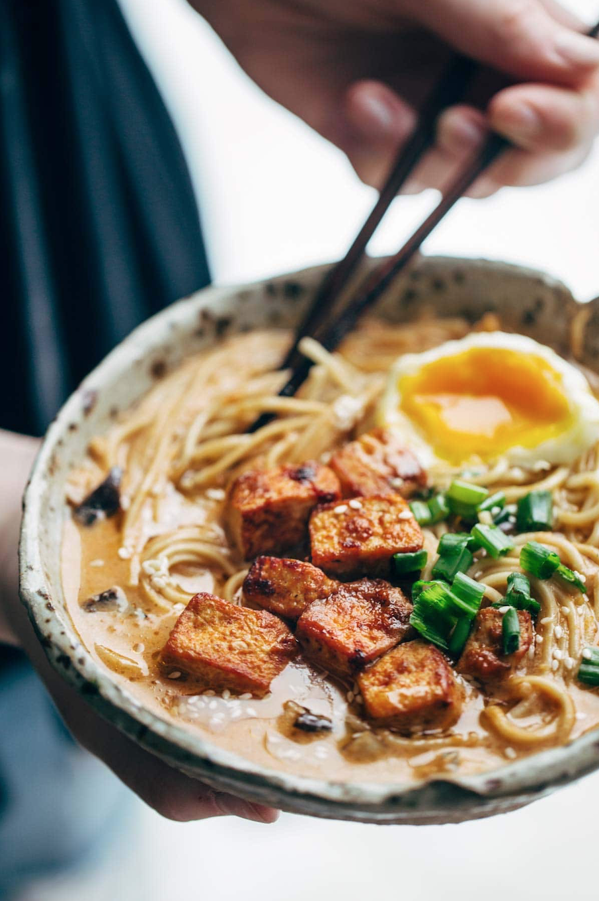

Homemade Spicy Ramen with Tofu

See this page for the recipe and photo from Pinch of Yum.
Ingredients
**Spicy Miso Paste:**
- 1 small yellow onion
- 1/2 cup red miso
- 1/2 cup white miso
- 3 tablespoons sambal oelek
- 6 cloves garlic
- 2 inch piece fresh ginger
- 3 tablespoons mirin
- 2 tablespoons vegetable oil
- 2 tablespoon toasted sesame oil
**Ramen:**
- 12-15 ounces extra firm tofu
- 1 tablespoon oil
- 4 eggs
- 5 ounces fresh shiitake mushrooms, chopped
- 3-4 cups chicken stock
- 2 cups plain unsweetened soy milk
- 6 ounces ramen noodles
- scallions, roasted seaweed, sesame oil for serving
Directions
**Spicy Miso Paste:**
- Pulse all miso paste ingredients in a food processor until a smooth, thick paste forms. You will use about half of it for this recipe and the other half can be frozen or refrigerated for a few days.
**Tofu**
- Press as much moisture as you can out of the tofu using paper towels or tofu press.
- Cut into cubes.
- In a large pot, heat the oil on medium high heat and start frying the tofu.
- Once the tofu has browned, add 1/4 cup of the spicy miso paste and cook for another minute or two to get a nice golden color.
- Remove from pan and set aside.
**Broth:**
- To the same pan, add the chopped shiitakke and a tablespoon or so of miso paste and stir fry until golden brown.
- Add the stock and soy milk and bring to a simmer.
- Place 1/2 cup spicy miso past on top of a very fine sieve.
- Lower the sieve half-way into the simmering soup and use a spoon to slowly dissolve the paste into the soup.
- Discard the "solids" remaining in the sieve and let the soup simmer for another 5 minutes.
- Taste and adjust seasoning--add salt or a little soy sauce until it tastes like a spicy ramen broth.
**Eggs and Ramen:**
- Cook the ramen noodles according to package instructions and drain well.
- While the ramen is cooking, bring a small pot of water to boil.
- When it reaches boiling, add 4 eggs and reduce heat to the lowest possible setting.
- Cook for exactly **7 minutes**, remove eggs from water, run under cold water, and let them set for a few minutes.
- Peel shells off carefully. Yolks will be soft.
**Serving**
- Divide the noodles into four large bowls and ladle the soup on top (you may have a bit mroe than needed).
- For each serving, top with the tofu, 1 soft-boiled egg (cut in half), scallions, and sesame oil.
Contact me
Email Maredith!
Here's my physical address:
The University of Montana
32 Campus Dr
Missoula, MT 59812